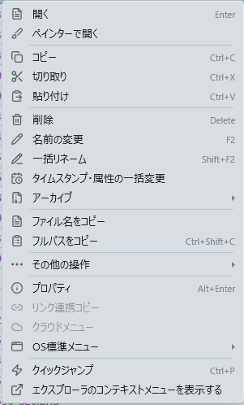

右クリックメニュー¶
ファイル一覧で右クリックしたときに出るメニューです。アプリ独自の軽いメニューと、Windows 標準のメニュー（エクスプローラ互換）の 2 種類があり、独自メニューの中からも Windows やクラウドのメニュー項目を呼び出せます。
できること¶
| したいこと | 操作 |
|---|---|
| よく使う操作をすぐ選ぶ | 右クリック（アプリ独自メニュー） |
| Windows 標準のメニューを出す | Shift を押しながら右クリック |
| キーボードでメニューを開く | アプリケーションキー、または Shift + F10 |
| 7-Zip や VS Code などが足したメニュー項目を使う | 独自メニューの「OS標準メニュー ▶」 |
| Box・SharePoint のリンクを取る | 独自メニューの「リンク連携コピー」「クラウドメニュー ▶」 |
| 並べ替え・新規作成 | 一覧の空いたところを右クリック |

独自メニューは、選んだものの種類と数に合わせて項目を出し分けます。キーが割り当てられている操作には、右端にそのキーが出ます（例:「コピー Ctrl+C」）。設定 → ショートカットキー でキーを変えると、メニューの表記もそのまま変わります。
使い方¶
2 種類のメニューを使い分ける¶
- アプリ独自メニュー（既定・推奨）: よく使う操作だけを並べた軽いメニューで、右クリックした瞬間に開きます。
- エクスプローラ互換メニュー: Windows 標準の右クリックメニューをそのまま出します。シェル拡張（7-Zip など）がエクスプローラーに足した項目も、そのまま並びます。
ふだん使う方は 基本設定 → コンテキストメニュー で選びます。独自メニューを使っていても、次の方法で一時的にエクスプローラ互換メニューを出せます。
Shiftを押しながら右クリック（Shiftを押しながらアプリケーションキーでも同じ）- 独自メニューのいちばん下の「エクスプローラのコンテキストメニューを表示する」
エクスプローラ互換メニューは、同じフォルダの中のものを選んでいるときだけ出せます（Windows のメニューがそういう作りのため）。検索結果などで別々のフォルダのものを選んでいるときは、その旨をお知らせして独自メニューを出します。
キーボードで開く: アプリケーションキー（設定 → ショートカットキー で変えられます）か Shift + F10 で、選んでいる行の左下にメニューが開きます。何も選んでいなければ一覧の左上に開きます。
ファイル・フォルダを右クリックしたとき¶
メニューは区切り線で次のまとまりに分かれます。よく使う操作を上の階層に、使う頻度の低いものは「その他の操作 ▶」に入れています。
| まとまり | 項目 | 出る条件 |
|---|---|---|
| 開く | 開く（Enter） |
いつも（複数選んだときは出ない） |
| 新しいタブで開く ／ 反対ペインで開く | フォルダを 1 つ選んだとき | |
| テキストエディタで開く | テキスト系のファイルだけを選んだとき | |
| テキスト比較（A ペイン内） | テキスト系のファイルを 2 つ選んだとき | |
| テキスト比較（A ペイン ↔ B ペイン） | テキスト系のファイルを 1 つ選び、反対のペインでもテキスト系のファイルを 1 つ選んでいるとき | |
| ペインターで開く | 画像だけを選んだとき | |
| クリップボード | コピー（Ctrl+C）・切り取り（Ctrl+X）・貼り付け（Ctrl+V） |
いつも |
| 編集 | 削除（Delete） |
いつも |
名前の変更（F2） |
1 つ選んだとき | |
一括リネーム（Shift+F2）・タイムスタンプ・属性の一括変更 |
いつも | |
| アクセス権を変更 | サーバー（FTP / SFTP）上のものだけを選んだとき | |
| アーカイブ ▶ | いつも（下の「アーカイブ ▶」） | |
| 名前・パス | ファイル名をコピー ／ フルパスをコピー（Ctrl+Shift+C） |
いつも。複数なら改行区切り |
| その他の操作 ▶ | （下の表） | |
| システム | プロパティ（Alt+Enter） |
いつも。複数選ぶと、まとめたプロパティを出す |
| リンク連携コピー ／ クラウドメニュー ▶ | いつも。Box・SharePoint・OneDrive（職場・学校）のフォルダの外では押せない | |
| OS標準メニュー ▶ | いつも（下の「OS標準メニュー ▶」） | |
| 移動 | クイックジャンプ（Ctrl+P）／ エクスプローラのコンテキストメニューを表示する |
いつも |
貼り付けの行き先: フォルダを 1 つ右クリックして「貼り付け」を選ぶと、そのフォルダの中へ貼り付けます（エクスプローラーと同じ）。ファイルや複数の項目を右クリックしたときと Ctrl+V は、今表示しているフォルダへ貼り付けます。切り取った項目がすでに貼り付け先にあるときは何も動かさず、その旨を知らせて切り取った状態を残します。
「その他の操作 ▶」に入るのは次の項目です。
| 項目 | 出る条件 |
|---|---|
| 連携用BOXパスをコピー | Box のフォルダの中 |
お気に入りに追加（Ctrl+D）／ お気に入りから解除 |
1 つ選んだとき |
| ショートカットの作成 | いつも |
| ハッシュを計算・照合 | ファイルを選んだとき |
| インデックス検索でこのフォルダを検索 ／ このフォルダ以下の一覧をCSV出力 ／ Excel出力 ／ このフォルダをAペイン・Bペインのホームに設定 | フォルダを 1 つ選んだとき |
| PDFに変換して同フォルダへ保存 | 変換できるファイルを 1 つ選んだとき |
| PDFに変換して結合・同フォルダへ保存 | 変換できるファイルだけを複数選んだとき |
| 選択項目を Claude に渡す ／ 選択項目のパスをターミナルに挿入 | いつも |
無料版で回数の上限に達した機能は、南京錠の付いた「（上限到達）」の表示になり、押せなくなります。
空いたところを右クリックしたとき¶
一覧の空いたところを右クリックすると、今表示しているフォルダについてのメニューが出ます。
- 並べ替え ▶: 名前・更新日時・サイズ・拡張子、昇順・降順、「フォルダを先頭に表示する」。アイコン表示では列の見出しが無いので、ここで並べ替えます（ツールバーの並べ替えボタンも同じメニューです）。
- 貼り付け
- フルパスをコピー
- 新しいフォルダ（
Ctrl+Shift+N）／ 新しいテキストファイル ／ 新規作成 ▶: 作ったあとすぐ名前の入力になり、取り消すと作ったものを消します。「新規作成 ▶」には Word・Excel など、Windows に登録された新規作成のひな形が並びます（起動したあとに裏で読み込むので、起動直後は出ないことがあります）。 - その他の操作 ▶: フォルダ内の一覧をコピー（名前）／（フルパス）、連携用BOXパスをコピー（Box のみ）、インデックス検索でこのフォルダを検索、このフォルダ以下の一覧をCSV出力 ／ Excel出力
- プロパティ ／ リンク連携コピー ／ クラウドメニュー ▶ ／ OS標準メニュー ▶
- クイックジャンプ ／ エクスプローラのコンテキストメニューを表示する
「フォルダ内の一覧をコピー」は、今見えている一覧（種類の絞り込みや並べ替えを反映したもの。検索結果のタブなら検索結果）を改行区切りでコピーします。
アーカイブ ▶¶
選んだものがすべてアーカイブなら展開の項目、そうでなければ圧縮の項目が並びます。
- 展開: 展開...（場所を選ぶ）／ ここに展開 ／「名前\」に展開（複数なら「それぞれ新しいフォルダに展開」）／ 反対ペインに展開 ／ アーカイブをテスト
- 圧縮: 圧縮...（形式や場所を選ぶ）／「名前.zip」に圧縮 ／ 個別に ZIP へ（複数のとき）／ 反対ペインに ZIP を作成
詳しくは アーカイブ を見てください。
主な項目の説明¶
- テキストエディタで開く:
.txt・.md・.json・.htmlなどを、表示 → テキストエディタ で指定したエディタ（VS Code・Notepad++・サクラエディタ・メモ帳など）で開きます。指定が無ければ、Windows で.txtに関連付けられたアプリで開きます。.csvや.datなど、既定で対象になっていない拡張子も 表示 → テキストエディタ の「対象に足す拡張子」で加えられます。 - テキスト比較: 2 つのテキストファイルを左右に並べ、足した行（緑）と消した行（赤）を色分けします。左端のミニマップで、ファイル全体のどこに違いがあるかが分かり、押すとそこへ飛びます。5MB までのファイルが対象です（→ テキスト比較）。
- ペインターで開く:
.png・.jpg・.bmpなどを、Windows で画像の編集に指定しているアプリで開きます。 - PDF に変換: 画像（
.jpg・.jpeg・.png・.bmp・.gif）と Office 文書（.docx・.doc・.docm・.xlsx・.xls・.xlsm・.pptx・.ppt・.pptm）を PDF にして、同じフォルダへ「元の名前.pdf」で保存します。結合するときは「Combined_日時.pdf」になります。Office 文書の変換には Microsoft Office が必要です。 - このフォルダ以下の一覧を CSV 出力 ／ Excel 出力: サブフォルダを含むすべてのファイルを読み、項番・ファイル名・相対フォルダパス・更新日時・サイズの表を作ります（CSV は UTF-8 BOM 付き。拡張子の無いファイルは含めません）。パスは起点のフォルダからの相対パス（
.\Sub\）なので、Box のようにユーザーごとに場所が違っても同じ表を使えます。Excel では「フォルダを開く」の列が相対パスのリンクになり、見出し行の固定とオートフィルタが付きます。 - このフォルダを A ペイン・B ペインのホームに設定: そのペインのホームボタンと、新しいタブで開く場所になります。
OS標準メニュー ▶¶
Visual Studio・VS Code・Git・7-Zip・サクラエディタ・Everything・Microsoft Defender など、Windows に登録されたアプリの右クリック項目を、独自メニューのままアイコン付きで呼び出せます。7-Zip のような入れ子のメニューもそのまま開きます。
- 開く・コピー・削除・名前の変更・プロパティ・ショートカットの作成など、独自メニューに同じものがある項目は出しません。Box・OneDrive・SharePoint の項目は「クラウドメニュー ▶」に出ます。
- Windows 11 の新しい形式で登録された項目も出ます。アプリが右クリックの項目を登録する方法には従来の形式と Windows 11 の新しい形式があり、新しい形式は本来エクスプローラーでしか出せません。両方を読み取って 1 つにまとめ、同じアプリが両方で登録しているときは 1 つだけ出します。
- 出る項目は、選んだものの拡張子・フォルダかどうか・空いたところを右クリックしたかで決まります（エクスプローラーと同じ判定です）。
クラウドメニュー（Box・SharePoint・OneDrive）¶
Box Drive や SharePoint・OneDrive（職場・学校）と同期しているフォルダの中では、次の 2 つが使えます（ほかの場所では淡く表示され、押せません）。
- クラウドメニュー ▶: 「Box で共有」「バージョン履歴」など、クラウドのアプリが右クリックに足した項目を呼び出します。
-
リンク連携コピー: 共有リンクを取り出し、HTML と文字の両方の形でクリップボードに入れます。Teams・Outlook・Slack などに貼るとアイテム名がそのままリンクになり、メモ帳などでは「アイテム名 ( URL )」の形になります。中身は「親フォルダの Box 上のパス → 親フォルダの共有 URL → 各アイテム名（それぞれにリンク）」の 3 段で、空いたところで使うとフォルダの中のすべてのアイテムが並びます。できると「Box共有情報をコピーしました」と通知し、ペインが緑に光ります。
Box Drive の更新（v2.52 以降）で、リンクをコピーすると Box の共有ウィンドウも開くようになりました。Box 側に元へ戻す設定が無いので、この操作で開いたウィンドウはアプリが自動で閉じます（自分で開いていた Box のウィンドウは閉じません）。共有 URL が取れなかったときは「Boxパスのみコピーしました（共有リンクは取得できません）」、20 秒待っても取れなかったときは「共有リンクを取得できませんでした」と通知します。
-
Box の共有リンクを 2 行の形で取る: Box のフォルダで
Shiftを押しながら右クリックしてエクスプローラ互換メニューを出し、「共有」→「共有リンクをコピー」を選ぶと、その後 20 秒のあいだクリップボードを見張り、Box が URL を書き込んだところで「1 行目: Box 上のパス、2 行目: 共有 URL」の形に置き換えます。できるとペインが緑に光り、ステータスバーに「BoxパスとURLを結合しました」と出ます。
しくみ¶
独自メニューが右クリックした瞬間に開く理由¶
- 独自メニューは、アプリが持っている情報（選んだものの種類・数・場所）だけで組み立てます。Windows に問い合わせないので、待ち時間がありません。組み立てにかかった時間はログに
[ContextMenu] shown in 〈ms〉msとして残ります。 - Windows やアプリに問い合わせる項目は、そのサブメニューにマウスを乗せたときに初めて取りに行きます。セキュリティ対策ソフトやクラウド同期の影響で、この取り出しに 9.8 秒かかった例があり、右クリックのたびに先回りして取るのはやめました。
- 「OS標準メニュー ▶」は、従来の形式と Windows 11 の形式を並行して取り出すので、待ち時間は 2 つ分になりません。6 秒で間に合わなければ「読み込みに時間がかかっています」と出して、さらに最大 30 秒待ちます。取り出せる項目が本当に無いときは「利用できる項目がありません」と出ます。
- 「クラウドメニュー ▶」は、覚えていなければ最大 3 秒待ちます。
- 取り出した結果は 10 分間（最大 20 件）覚えておき、同じ場所・同じ種類のファイルでもう一度開いたときはすぐ出します。何も取り出せなかった結果は覚えません（次に開いたときにもう一度取りに行けるように）。
エクスプローラ互換メニューの出し方¶
- Windows 標準のメニューは、専用のスレッドを 1 本立てて、そこで Windows に作ってもらいます。画面ごとの拡大率（DPI）に合わせて描かれるよう、そのスレッドは画面ごとの拡大率に対応した状態で動きます。
- メニューは、選んだ最初の項目があるフォルダを基準に作ります。
- 「名前の変更」「削除」「プロパティ」は、Windows に任せずアプリが引き受けます。独自メニューを使ったときと同じ動き（削除の確認・名前の入力など）になります。
- 画面の右端・下端にはみ出しそうなときは、左・上に寄せて出します。
関連¶
- ショートカットキー一覧 — メニューに出るキーを変える
- アーカイブ — 展開と圧縮
- テキスト比較 — 2 つのファイルを並べて比べる
- 一括リネーム — 名前をまとめて変える
- 標準的なファイル操作 — コピー・移動・削除